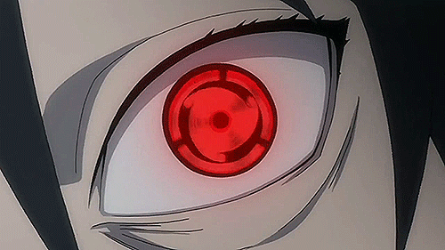

Главная страница
Смайлы для души
Контактики
Денёчек добрый!
Тут ссылка, нужно по ней кликнуть
Вперед!

Мангекье Саске
Внешне глаз представлен шестиконечной фигурой с выраженным зрачком. В отличие от брата, Саске научился контролировать Аматерасу: придавать нужную форму и использовать с другими ниндзюцу.